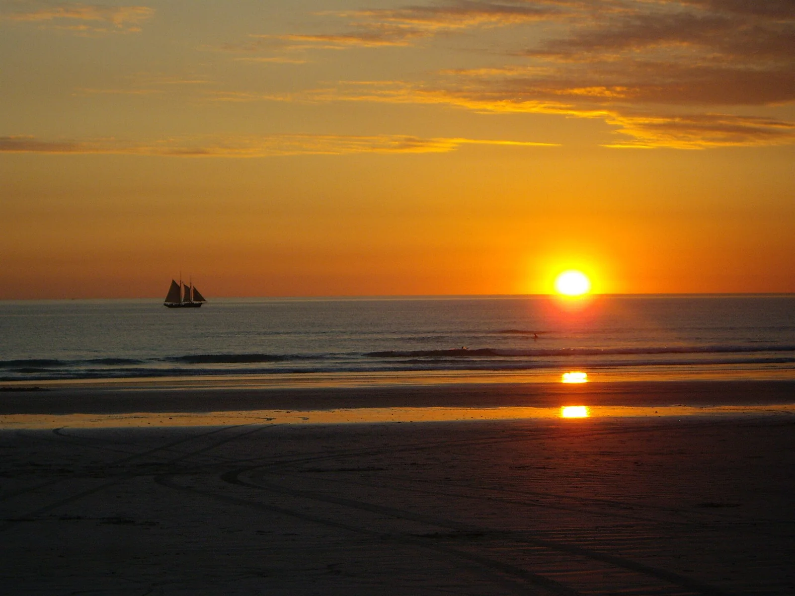

Cable Beach
Broome, Australie · surf, baignade

À Broome, une longue plage de sable s’étire face à l’océan Indien. Cable Beach change de visage avec la marée ; renseigne-toi sur les zones ouvertes et les consignes locales avant d’entrer dans l’eau.
- Lieu
- Broome, Australie
- Niveau
- Variable selon les conditions
- Activités
- surf, baignade
- Type d'eau
- Mer / océan
- Coordonnées
- -17.93, 122.21 (position approximative du secteur)
Ouvrir dans Ocean Buddy Télécharger sur l'App Store
Source : Wikipédia · géographie du lieu.